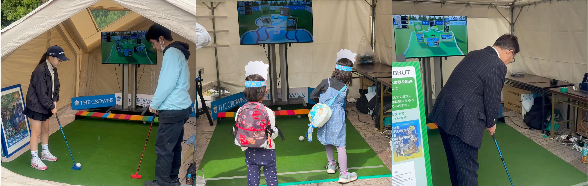
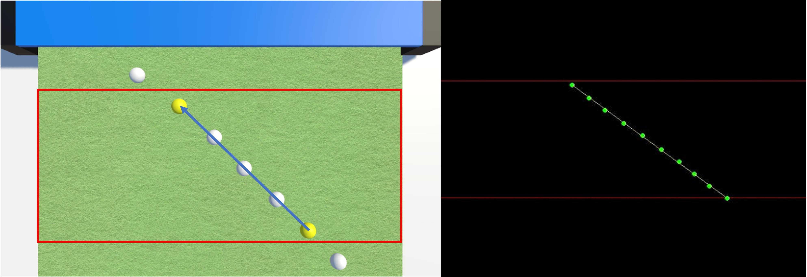
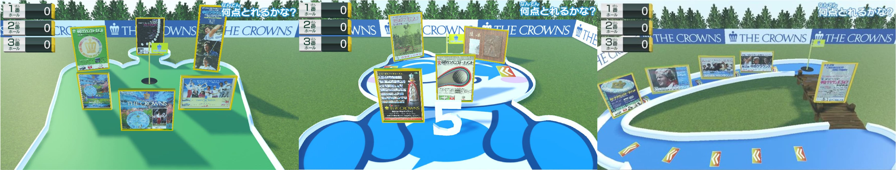
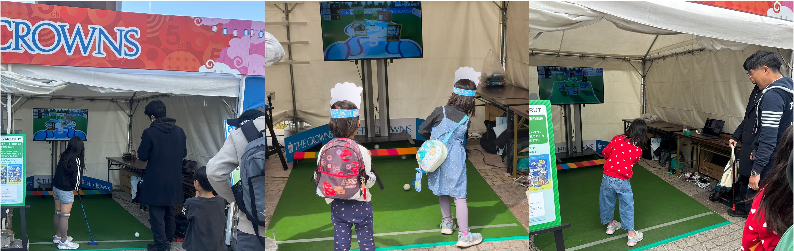

ミラクルパターゴルフ
リアルとバーチャルを融合したパターゴルフコンテンツ

二次元LiDAR, ゴルフ, エンタテインメント, インタラクション
使用技術
- C++ (OpenGL, OpenCV, 2D LiDAR)
- C# (Unity)
概要
本作品は、実空間と仮想空間をシームレスに接続する体験型パターゴルフコンテンツです。プレイヤーが実際のパターで打ったボールをセンサで検出し、その位置・進行方向・速度を保持したまま仮想ゴルフコースへ反映します。仮想空間には得点要素や加速ギミックを導入し、初心者から経験者まで楽しめるゲーム体験を実現しました。プロゴルフ大会の会場で展示を行い、子どもから大人まで幅広い来場者に体験していただきました。
二次元LiDARによるゴルフボールの検出

仮想空間のゴルフグリーン

中日クラウンズでの運用
作成したコンテンツは2025年5月1〜4日に名古屋ゴルフ倶楽部で開催された「中日クラウンズ2025」、2026年4月30日~5月3日のフードコートエリアに展示しました。 中日クラウンズ2025では４日間で約550人、中日クラウンズ2026では４日間で約500人の来場者に体験していただきました。
作成したコンテンツは2025年5月1〜4日に名古屋ゴルフ倶楽部で開催された「中日クラウンズ2025」、2026年4月30日~5月3日のフードコートエリアに展示しました。 中日クラウンズ2025では４日間で約550人、中日クラウンズ2026では４日間で約500人の来場者に体験していただきました。
また、ゴゴスマなどの全国放送のテレビ番組でも紹介していただきました。
CBC 5チャン春祭りでの運用
制作したコンテンツを2026年3月20〜22日に名古屋市中区久屋大通公園で開催されたCBCテレビ主催の「CBC 5チャン春祭り」にて展示しました。 CBC 5チャン春祭りでは3日間で約600人の来場者に体験していただきました。
また、愛知県知事の大村知事にも本コンテンツを体験していただきました。
展示では、未就学児から大人まで幅広い年齢層の来場者に体験していただきました。ゴルフ未経験者や子どもの参加も多く見られましたが、パターゴルフをベースとしたシンプルな操作と、仮想空間ならではの得点要素やギミックにより、多くの方に楽しんでいただくことができました。また、複数回挑戦する来場者や、家族・友人同士でスコアを競い合う姿も見られ、年齢やゴルフ経験を問わず楽しめるコンテンツであることを確認できました。
